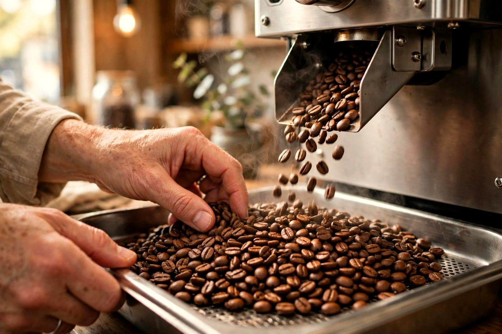

ABOUT US
いつもの一杯を、少しずつ。
ひより珈琲は、商店街の外れにある小さなカフェです。
朝のひと息にも、散歩の寄り道にも。暮らしの途中で立ち寄れる場所を目指しています。
SMALL BATCH ROASTING
小さな焙煎機から
店内で少量ずつ焙煎しています。豆の香りや色を確かめながら、その日の仕込みを進めます。
飲み方に迷ったら、お好みを聞かせてください。

FROM THE OWNER
店主から
店主のはるです。珈琲を淹れる時間と、パンが焼ける香りが好きで、この店を始めました。
スタッフと二人、小さな店のペースでお迎えします。
店主・スタッフの紹介は架空の設定です。
AT YOUR PACE
それぞれの、ひと休みを
本を読んだり、少し仕事をしたり、ご家族でおやつを分けたり。思い思いにお過ごしください。
混み合う時間には、お席の譲り合いをお願いしています。